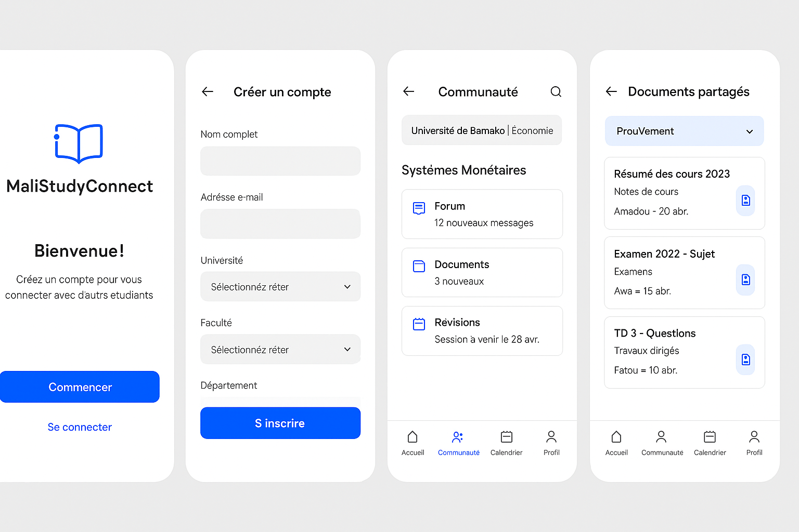
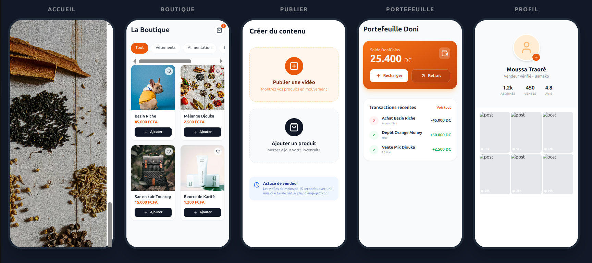

Mes Projets Phares
MaliStudyConnect
Plateforme mobile révolutionnaire connectant les étudiants maliens pour partager ressources académiques, notes et opportunités. Développée avec Flutter pour une expérience fluide et accessible.

Flutter / Dart / Firebase Voir sur GitHubKalanTools
Suite éducative offline complète : calculatrice scientifique, bibliothèque numérique et gestionnaire de notes. Idéale pour les environnements sans connexion internet.
 Flutter / Dart / SQLite
Voir sur GitHub
Flutter / Dart / SQLite
Voir sur GitHub
Lahidou_tok
Application de vidéos courtes inspirée de TikTok, dédiée à la promotion de produits et services locaux. Intègre IA pour recommandations personnalisées et analyse de contenu.

Python / Flask / IA / Flutter Voir sur GitHub